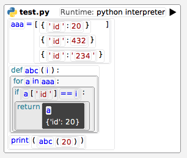

Sandblocks
Sandblocks is a projectional, block-based programming environment written in Squeak/Smalltalk.
In this documentation, you will find some useful resources to help you get started with extending and working with the editor and environment.
Frequently Asked Questions
How do I open a morph in the editor?
In a Smalltalk workspace (open via the plus button up top), run:
sbEditor openMorphInView: MyBlock new
How do I copy-paste text into the blocks?
Whenever you use ctrl+c on a block, it is also copied to the system clipboard as text. To paste text from the system clipboard, use ctrl+shift+V.
How do I select themes and which ones are recommended?
Right click into the editor or press ctrl+; to open the list of global actions. Filter for
colorand press enter.Currently recommended themes are
ColorMinimal, as well asLightPlus,Solarized, andSolarizedDark.
Where can I find all the shortcuts?
Have a look at
SBTextInputMapping>>#registerDefaultShortcuts.
How do I (no longer) use the Sandblocks editor as default in all the Squeak tools?
Run
CodeHolder addSandblocksDefault: trueorfalseto still have it as an option but not make it the default.
Walkthroughs
In this chapter, we included a couple of videos that should give you an overview on how to work on and with the system. It concerns common tasks such as extending the system with new blocks or palettes.
Setting up Squeak
In this walkthrough, we present a couple of preferences that we recommend you enable in Squeak, followed by a couple of debugging or exploration workflows.
In between our image even crashes, so we got to demonstrate recovering unsaved changes you made after a crash.
Recap
- Preferences mentioned
- Open tools attached to cursor
- Mouse over for keyboard focus
- Auto enclose brackets
- Enclose selection with brackets
- Packages mentioned
- Shortcuts mentioned
- Global
Ctrl+wclose window (if adapted inSystemWindow>>#filterEvent:for:)Ctrl+Shift+Qsave image (if adapted inPasteUpMorph>>#tryInvokeKeyboardShortcut:)Ctrl+0to focus searchMiddleclick/Alt+Leftclickopen halo (addShiftto start from the innermost)Alt+.halt execution of current process (e.g. when in an infinite loop)
- Editing/Evaluating
Ctrl+fin the class list to find a classAlt+numto insert the num'th argumentCtrl+pprint selected expression or full lineCtrl+ddo selected expression or full lineCtrl+Shift+Ievaluate selected expression or full line and explore result
- Exploring code
Ctrl+bbrowse class of object or selected class nameCtrl+nshow senders of selected symbolCtrl+mshow implementors of selected symbolCtrl+Shift+Nshow references to selected variable or class
- Global
- Methods mentioned
self haltself haltOnce1 setHaltOnce
Working with Git
Here, we walk through checking out a separate branch, pushing our work, and merging the work of our collaborators.
We also detail how to add packages to an existing Tonel repo.
Git Commands Mentioned
git reset --hardreset all files in the filesystem to the last commitgit fetch --allfetch changes onto ourorigin/branches but do not merge them just yetgit push -u origin BRANCHpush a local branch to the remote and remember theorigin BRANCHas its upstream so that you can leave it out next time
Adding Your Repo in Squeak
- Via the commandline,
git cloneyour repo to any folder on your filesystem. - When first opening the Git Browser, it will ask you to add a new project. Click yes.
- Locate the folder that you
git cloned earlier.
Recommended Workflow
- Perform changes in the image
- Commit using the Git Browser
Ctrl+xto ignore change for commit
git pushusing the CLI or setup credentials in the Git Browser and use the push button- To merge other people's work, we have three options:
- use the Git Browser's pull button (need to have credentials setup, no conflict resolution)
- run
git fetch --allin the CLI, right click the origin branch and clickmerge(no conflict resolution) git pullin the CLI, then right click new most recent commit and selectcheckout(might result in invalid Smalltalk, is not aware of uncommitted changes in your image)
- When adding packages, right click the project and click "change tracked packages", add the packages, then make sure to go to settings and re-select the right type of storage format
Difference to Metacello
Metacello is a dependency manager that will only fetch the most recent version of the packages you want to install. The Git Browser, on the other hand, will clone and manage the entire history of the repository and allow you to create and push new commits.
Custom Palettes
In this walkthrough, we create a custom palette that is only active if we are in a subclass of the System class.
Recap: The Basic Steps
- Create a subclass of
SBPalette. - Implement its
#contextmethod on the class side to match against the block selection. - Implement the
#buildOn: method on the class side to return pre-built blocks.
Custom Blocks
Here, we define a custom block that should act as a little weather widget.
We show how to work with and debug layouts and how to get a live preview of our work while in Sandblocks.
Recap: Interesting Commands
sbEditor openMorphInView: MyBlock newwhen run in a Smalltalk workspace, opensMyBlockin the current editorSBMorphExampleautocompletion: expands to a preview window for your block that reloads when you change the codeSBIconclass for icons, here's the full listself attachDecorator: SBMoveDecorator new, make the block move when left-click-dragged<action>pragma, mark a method as an action to show up in the context menu and be invokable via shortcuts<globalAction>pragma, a method that should appear in the context menu of the editor (can also be mapped to shortcuts,<action>shortcuts take precedence before<globalAction>shortcuts)SBTextInputMapping>>#registerDefaultShortcuts, list of all shortcut to action mappings
Custom Projections
Here, we take the custom block from the previous walkthrough and map it to a Smalltalk constructor. Using this mapping, whenever this constructor is seen in Smalltalk code, it will instead be displayed as our custom block.
NOTES / API CHANGES:
- an
object ^ selfmethod is no longer necessary but the default- instead of
#canAppearInBlockBody, you should now only implement#isExpression(which also sets#canAppearInBlockBody)
Recap: Basic Steps
- prepare your custom projection/widget
- add a converter method to SBStMessageSend that matches the expressions you want to substitute for (optional: specify it as
<automatic>) - implement
#writeSourceOn:on your widget to produce Smalltalk code - mark the capabilities of your projection by returning
truefrom#isSmalltalkand#isExpression - implement
#updatePCFrom:to get debugging support (can leave it empty) - optional: add a converter method back to smalltalk using your
#writeSourceOn:
Custom Commands
To allow for undo and change tracking, all mutations to state in Sandblocks must be performed through commands.
Commands are subclasses of SBCommand that describe the change in the system:
SBReplaceCommand new
target: ...;
replacer: ...;
yourself
To perform a command, call do: on the SBEditor:
self sandblockEditor do: (SBReplaceCommand new
target: ...;
replacer: ...;
yourself)
Commands will ensure that the next artefact in the block tree will be marked as having unsaved changes after a command is applied.
Combining Commands
Often, you will want to perform multiple things at once but they should be undo-able with a single click.
For this purpose, you may use the SBCombinedCommand:
SBCombinedCommand newWith: (targets collect: [:target |
SBDeleteCommand new target: target])
Some Built-in Commands
Here is a quick overview of some built-in commands. Use Ctrl+Shift+N in the Squeak image to see how each is used.
| Command | Effect |
|---|---|
| SBMutateProperty | Change the field of an object, such the checked state of a checkbox |
| SBDeleteCommand | Delete a block |
| SBInsertCommand | Insert a block at a given index |
| SBReplaceCommand | Replace a block with another |
Custom Commands
If you need to perform a more complicated side effect, often a custom command will be the easiest way to perform it.
Custom commands are simple to implement: subclass SBCommand and implement do and undo.
You can consider subclassing from a more specific command, such as the SBDeleteCommand if both a block should disappear and something else should happen in the system.
For a more lightweight alternative, you can also use the general purpose SBDoItCommand and combine it with another command, e.g.:
SBCombinedCommand newWith: {
SBDoItCommand new
do: [Transcript showln: 'deleted block'];
undo: [Transcript showln: 'restored block'. self];
yourself.
SBDeleteCommand new
target: self;
yourself
}
But generally, a custom subclass is a preferred, as it allows inspecting the data inside the command more easily.
Lists of Blocks
A common pattern is to have an extensible list of blocks. For this, we need to do three things:
- inform the system that our block can take multiple children
- inform the system which blocks our block can take as multiple children
- add a method that creates new instances of our desired type of children

1. Mark as List Block
The first step is simple. Assume we have a MyListBlock block subclass. All we need to do is:
MyListBlock>>fixedNumberOfChildren
^ false
2. Communicate Block Interfaces
For the second step, we communicate the object interface that the block needs to fulfill:
MyListBlock>>objectInterfaceNear: aBlock at: aSymbol
^ {[:o | o isKindOf: MyChildWidget]}
" or "
^ {#isMyChildWidget}
" or "
^ {#isMyChildWidget understood. #isMyChildWidget}
The symbols or blocks you provide in this list will be checked one by one on the incoming block and only if all return true, the block is allowed to be added.
3. Provide a Creator Method
Lastly, we will want to inform the system what the default block should look like if the user presses the insert-child shortcut.
MyListBlock>>newEmptyChildNear: aBlock before: aBoolean
^ MyChildWidget new contents: 'empty'
Autocompletion at Insert Positions
If you want to provide an autocompletion popup at insert positions, you need to provide a custom insert command. For example:
MyListBlock>>insertCommandRequest: aMorph near: aBlock before: aBoolean
^ MyInsertCommand new
near: aBlock before: aBoolean in: self morph: aMorph;
yourself
MyInsertCommand subclassOf: #SBRelInsertCommand
MyInsertCommand>>suggestions
" you can access `self container` here if you want to compute these "
^ {
(SBInsertSuggestionItem selector: 'a' label: 'choice')
morph: (SBTextBubble new contents: 'a') new previewOnly: true.
(SBInsertSuggestionItem selector: 'b' label: 'choice')
morph: (SBTextBubble new contents: 'b') new previewOnly: true.
(SBInsertSuggestionItem selector: 'c' label: 'choice')
morph: (SBTextBubble new contents: 'c') new previewOnly: true.
}
From above, newEmptyChildNear:before: will then only be called if the autocompletion is not used and is thus the default block that will be inserted.
Drag and Drop
Drag and drop is enabled on all blocks in Sandblocks by default. Those, that have a Move Decorator, can be picked up via Ctrl+Drag. If the user holds Shift when starting to drag, the block is instead duplicated instead of moved.
In the previous chapter on lists, we saw that by implementing fixedNumberOfChildren, child blocks can be added to our custom block.
If we do so, dragging another block onto our custom block, will prompt the user to insert the block.
For blocks that do have a fixedNumberOfChildren, dropping a block will instead replace the block.
Custom Drop Handling
If, instead, you want to have custom logic be performed when a block is dropped, implement specialDropCommand: on your block class.
specialDropCommand: receives the candidate block that is about to be dropped onto your block and should return a command that would be executed if the block was released.
You must never perform side effects in
specialDropCommand:, as it is also called to just check whether a special command is available.
For example, assume our custom block should log the name of the dropped block to the Transcript:
CustomBlock>>specialDropCommand: aBlock
^ (SBDoItCommand newFor: self containingArtefact)
do: [Transcript showln: aBlock asString]
Saving and Artefacts
Artefacts collect changes to blocks and allow saving these changes to the system. In this video, we create an artefact that acts as a convenient editor over existing Squeak/Smalltalk classes.
We also demonstrate how to generate blocks quickly and conveniently.
Basic Steps
- Create a block subclass
- Return
truefromisArtefact - Implement
saveTryFixing:quick:and returntrueorfalse
Generating Blocks
By using the SBStBuilder class, you can quickly generate or save blocks. Explore its methods to see more.
To create a block without saving it, do [:b | b to: (b name: 'Object') send: #new] sbStBuild.
If you are creating an artefact, such as a method or class, you can call sbStSave instead, which will build the block, call save on it, and finally return it.
Custom Shortcuts
To register a custom shortcut for your block, do the following:
- implement a method with the
<action>pragma - implement
registerShortcuts:on your class - run
SBInputMapping updateShortcutProviders
In more detail:
(1) Implement an Action
In your block class, implement e.g.,
MyBlock>>doubleQuantity
<action>
self ...
(2) Implement registerShortcuts
On the class-side of your block class, implement e.g.,
MyBlock class>>registerShortcuts: aProvider
aProvider registerShortcut: $d command do: #doubleQuantity
For a lot of examples on different ways to specify shortcuts, see SBTextInputMapping>>registerDefaultShortcuts.
(3) Update Shortcut Providers
Finally, just do-it SBInputMapping updateShortcutProviders once and the shortcut should start working.
Tree Sitter
In this video, we work with Sandblocks' Tree Sitter backend, giving us access to languages such as Python or Javascript.
We create a replacement for Javascript's window.fetch and a palette for Javascript.
Notes & Errata
[41min04] instead of calling
SBJavascript parse: '2 + 2'it is now recommended to callSBJavascript parseElement: '2 + 2'if we only want a single parsed AST node instead of a full program[46min09] when we add the
factory:call for the palette block, useSBJavascript instanceinstead ofSBJavascript newto avoid rebuilding the grammar.
Git Setup Links
git clonegit@github.com:hpi-swa/sandblocksgit clonegit@github.com:hpi-swa-lab/sb-tree-sitter
Relevant Entrypoints
SBTSPalette: superclass for custom palettes. Make sure to look at its class-side.SBInlineBlockReplace: superclass for replacing blocks with custom morphsapplyReplacements/Ctrl/Cmd+r: action / shortcut for performing all matching replacements on a block- Documentation for Queries in Tree Sitter
- Playground for parsing and queris in Tree Sitter
Questions and Common Patterns
Adding Existing Tree Sitter Blocks Inside a Replacement
This is generally easy, just add them as you usually would and include a buildCopy to support undo:
SBBlock new addMorphBack: aTSBlock buildCopy.
(Without buildCopy the replaced block will contain a hole where the nested block used to be, breaking undo).
Adding New Tree Sitter Blocks Inside a Replacement
To create a new instance of a specific rule, use e.g.:
SBBlock new addMorphBack: (SBPython build: 'expression')
If you need a complete block, you can use parse: or parseElement::
SBBlock new addMorphBack: (SBPython parseElement: '3 + 4')
With parseElement:, you get the first child of the toplevel node.
In this specific example, the toplevel node is a program, nesting a binary_operator.
If you need multiple elements, use parse: instead:
SBPython parse:
'def a():
pass
a()'
Accessing Fields
Many Tree Sitter blocks contain field names, e.g.:
pair: $ => seq(
field('key', $._property_name),
':',
field('value', $.expression)
)
You can access these using the access helper, e.g.
aPairBlock access key sourceString
This helper wraps the block in a proxy object that looks up field names and, if matched, returns the corresponding block. All other messages are forwarded to the wrapped block.
A more complex example:
ax.set(12, "abc",
xlim=(0,8), xticks=np.arange(1,8), ylim=(0,8), yticks=np.arange(1,8))
Query all arguments as either just plain values or key/value pairs:
self access arguments children collect: [:arg |
arg type = 'keyword_argument' ifTrue: [arg name contents -> arg value] ifFalse: [arg]]
Resulting in:
{(integer) . (string) . 'xlim'->(tuple) . 'xticks'->(call) . 'ylim'->(tuple) . 'yticks'->(call)}
You can send fields to any block to find what field names this block knows (e.g. a keyword_argument knows name and value).
Creating a Replacement
- Subclass
SBInlineBlockReplace. - Create a matcher function on its class side (see video).
- Build your UI.
- Implement
writeSourceOn:to produce textual source code that is the equivalent of your replacement. - Implement
typeto inform the system what sort of node you are replacing. For example, if you are replacing a(call)in python, simple return^ 'call'fromtype.
Sandblocks/TreeSitter Runtimes
The runtimes system as part of Sandblocks-TreeSitter allows you to execute code from supported languages. It comes with support for monitoring its stdout/stderr and injecting watches that report back to the Sandblocks IDE.
Opening and Running a File
In a Sandblocks workspace, run:
(SBTSFile filepath: '/home/you/test.py') open
At the top of the file will be a Play button. Once clicked, it will try to find a python interpreter on your system and execute the given file.

Evaluating Foreign Code
If you want to evaluate a snippet of code, use e.g.
SBPython instance runtime evaluate: 'print("Hello!")'
The return value will be the stdout of the program snippet.
To receive stderr or to execute code asynchronously, check if your runtime implements #evaluateFileAsync:cancel:. Refer to its senders for examples on how to use the corresponding API.
Watches
You can insert a watch on any block moment but most likely inserting it on anything but an expression will result in a syntax error upon serialization or execution.
Insert a watch by either right-clicking the expression and filtering for wrapWithWatch or by pressing the Cmd+Shift+W shortcut.
Offscreen Watches
By placing watches offscreen, you can use them to report values from the runtime back to your TreeSitter replacement blocks.
For example, we could make all Javascript console.log calls log to the Squeak Transcript as well by creating a replacement for console.log and serializing the expression with the watch's source code wrapped around it (see also SBConsoleLogReporter class that comes with Sandblocks):
SBConsoleLogReporter>>initialize
super initialize.
" create a new empty watch and connect its reportedValue signal to our
newValue: method "
watch := SBTSWatch newEmpty when: #reportedValue send: #newValue: to: self
SBConsoleLogReporter>>writeSourceOn: aStream
" update the watch's expression to the expression our replacement is wrapping "
watch expression: self expression.
aStream nextPutAll: 'console.log('.
watch writeSourceOn: aStream.
aStream nextPutAll: ')'
SBConsoleLogReporter>>newValue: aString
" apparently our watch triggered a reportedValue signal, so we're called "
Transcript showln: aString
You can also use this with custom code to extract specific values from the runtime:
SBRequestReplacement>>initialize
watch := SBTSWatch newEmpty when: #reportedValue send: #newRequest: to: self
SBRequestReplacement>>writeSourceOn: aStream
" we are inserting this object literal in the code that expects a `req` variable
to be in the local scope and reporting the object back to squeak "
watch expression: (SBJavascript parseElement:
'{path: req.path, headers: req.headers.map(h => [h.key, h.value])}').
" ...our other serialization code, then our watch at a place where it's
syntactically valid "
watch writeSourceOn: aStream.
" ...more serialization code "
SBRequestReplacement>>newRequest: aString
" we get the data as a string, which we can then decode "
data := Json readFrom: aString.
Transcript showln: data headers
Pretty-Printing
Runtimes may support pretty printing code. If they do, whenever code is serialized to text (e.g., when copying or writing to a file), the #prettySourceString is called on the block, which passes the regular #sourceString of the block to the external pretty printer.
Javascript Web Runtime
The Javascript web runtime is special in that it does not actually invoke any programs. Instead, it will only spawn a server that listens for watches to trigger.